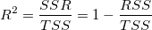

^2 \,\!") 切片が固定されていない場合
切片が固定されていない場合最終更新日：2020/02/26
クイックヘルプ：線形フィットで、切片が固定の時、R二乗値が大きく異なるのはなぜですか?
これは、R二乗が以下の式で計算されるからです。

ここで、SSR は回帰による二乗和、TSS は合計平方和、RSSは残差平方和です。TSSは:
切片が固定されていない場合| Notes:
Excelは修正されたTSSを使用します。これは、切片が固定されているかどうかに関係なく、上記の最初の式でR二乗を計算するためです。OriginとExcelの線形フィットの結果を比較すると、R二乗が大きく異なることがわかります。 |
切片が固定されているときにTSSの計算に補正されていない二乗和を使用する理由は、以下の詳細な説明をご覧ください。
線形フィットの切片が固定されている場合、以下の関係に基づきます。
)^2 + \sum_{i=1}^n (f(x_i))^2")
TSSおよびSSRは再定義される必要がありRSSは変わりません。

)^2")
そして決定係数（R-Square）は次のように再定義されます。
詳細については、 R-squareの追加情報 の章を参照してください。
キーワード: 線形フィット, R二乗, 切片, 固定